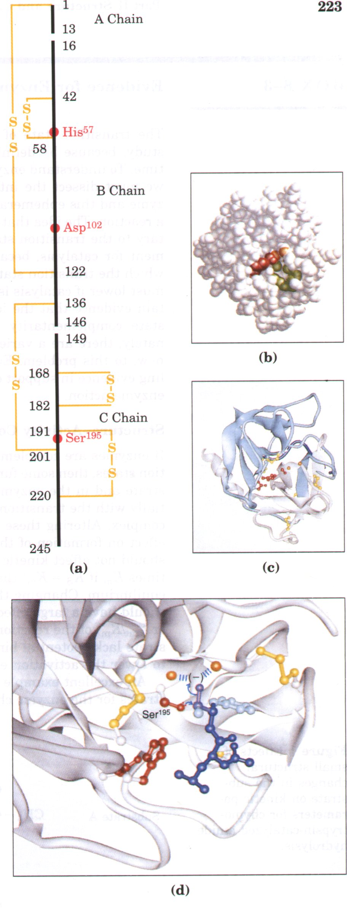
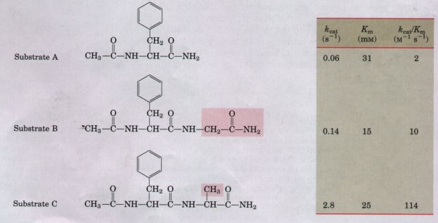
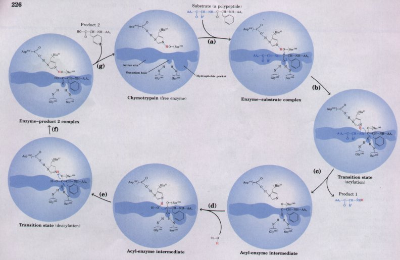
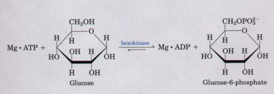
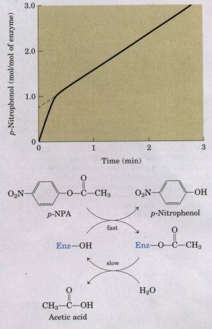
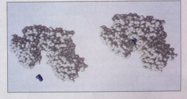
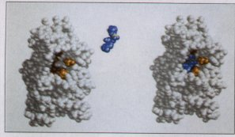
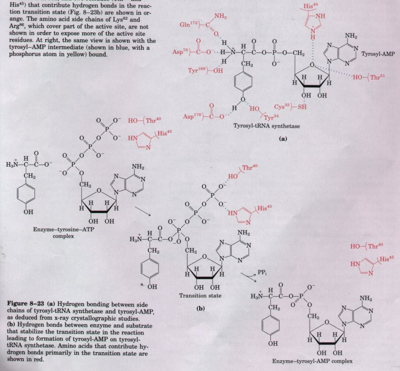

This chapter has focused on the general principles of catalysis and an introduction to some of the kinetic parameters used to describe enzyme action. Principles and kinetics are combined in Box 8-3, which describes some of the evidence that reinforces the notion that binding energy and transition-state complementarity are central to enzymatic catalysis. We now turn to several examples of specific enzyme reaction mechanisms.
An understanding of the complete mechanism of action of a purified enzyme requires a knowledge of (1) the temporal sequence in which enzyme-bound reaction intermediates occur, (2) the structure of each intermediate and transition state, (3) the rates of interconversion between intermediates, (4) the structural relationship of the enzyme with each intermediate, and (5) the energetic contributions of all reacting and interacting groups with respect to intermediate complexes and transition states. There is probably no enzyme for which current understanding meets this standard exactly. Many decades of research, however, have produced mechanistic information about hundreds of enzymes, and in some cases this information is highly detailed.
Mechanisms are presented for three enzymes: chymotrypsin, hexokinase, and tyrosyl-tRNA synthetase. These are chosen not necessarily because they are the best-understood enzymes or cover all possible classes of enzyme chemistry, but because they help to illustrate some general principles outlined in this chapter. The discussion concentrates on selected principles, along with some key experiments that have helped to bring them into focus. Much mechanistic detail and experimental evidence is omitted, and in no instance do the mechanisms described below provide a complete explanation for the catalytic rate enhancements brought about by these enzymes.
Chymotrypsin This enzyme is a protease (Mr 25,000) specific for peptide bonds adjacent to aromatic amino acid residues (see Table 6-7). The three-dimensional structure of chymotrypsin is shown in Figure 8-18, with functional groups in the active site emphasized. This enzyme reaction illustrates the principle of transition-state stabilization by an enzyme, and also provides a classic example of the use of general acid-base catalysis and covalent catalysis (Fig. 8-19, p. 226).
 |
Figure 8-18 The structure of chymotrypsin. (a) A representation of primary structure, showing disulfide bonds and the location of key amino acids. Note that the protein consists of three polypeptide chains. The active-site amino acids are found grouped together in the three-dimensional structure. (b) A space-filling model of chymotrypsin. The pocket in which the aromatic amino acid side chain is bound is shown in green. The amide nitrogens of G1y193 and Ser195 in the polypeptide backbone make up the oxyanion hole (see Fig. 8-19), and are shown in orange. The side chains of other key active site residues, including Serl95, His57, and Asp102 are shown in red, and are explained in Fig.(d) 8-19. (c) The polypeptide backbone of chymotrypsin shown as a ribbon structure. Disulfide bonds are shown in yellow; the A, B, and C chains are shown in dark blue, light blue, and white, respectively.(d) A close-up of the chymotrypsin active site with a substrate bound. Ser195 attacks the carbonyl group of the substrate (shown in purple); the developing negative charge on the oxygen is stabilized by the oxyanion hole (amide nitrogens shown in orange), as explained in Fig. 8-19. In the substrate, the aromatic amino acid side chain and the amide nitrogen of the peptide bond to be cleaved are shown in light blue. |
BOX 8-3Evidence for Enzyme-T~ansition State ComplementarityThe transition state of a reaction is difficult to study, because by definition it has no fmite lifetime. To understand enzymatic catalysis, however, we must dissect the interaction between the enzyme and this ephemeral moment in the course of a reaction. The idea that an enzyme is complementary to the transition state is virtually a requirement for catalysis, because the energy hill upon which the transition state sits is what the enzyme must lower if catalysis is to occur. How can we obtain evidence that the idea of enzyme-transition state complementarity is really correct? Fortunately, there are a variety of approaches, old and new, to this problem. Each has provided compelling evidence in support of this general principle of enzyme action. Structure-Activity CorrelationsIf enzymes are complementary to reaction transition
states, then some functional groups in the substrate and
in the enzyme must interact preferentially with the
transition state rather than the ES complex. Altering
these groups should have little effect on formation of
the ES complex, and hence should not affect kinetic
parameters (Ks, or sometimes Km if Ks = Km) that reflect
the E + S  Figure 1 Effects of small structural changes in the substrate on kinetic parameters for chymotrypsin-catalyzed amide hydrolysis. An excellent example is seen in a series of substrates for the enzyme chymotrypsin (Fig. 1). Chymotrypsin normally catalyzes the hydrolysis of peptide bonds next to aromatic amino acids, and the substrates shown in Figure 1 are convenient smaller models for the natural substrates (long polypeptides and proteins; see Chapter 6). The additional chemical groups added in going from A to B to C are shaded in red. Note that the interaction between the enzyme and these added functional groups has a minimal effect on Km (which is taken here as a reflection of KS), but a large, positive effect on kcat and kcat/Km. This is what we would expect if the interaction occurred only in the transition state. Chymotrypsin is described in more detail beginning on page 223. A complementary experimental approach to this problem is to modify the enzyme, eliminating certain enzyme-substrate interactions, by replacing specific amino acids through site-directed mutagenesis (Chapters 7 and 28). A good example is found in tyrosyl-tRNA synthetase (p. 227). Transition-State AnalogsEven though transition states cannot be observed directly, chemists can often predict the approximate structure of a transition state based on accumulated knowledge about reaction mechanisms. The transition state by definition is transient and so unstable that direct measurement of the binding interaction between this species and the enzyme is impossible. In some cases, however, stable molecules can be designed that resemble transition states. These are called transition-state analogs. In principle, they should bind to an enzyme more tightly than the substrate binds in the ES complex, because they should fit in the active site better (i.e., form more weak interactions) than the substrate itself. The idea of transition-state analogs was suggested by Pauling in the 1940s, and it has been used for a number of enzymes. These experiments have the limitation that a transitionstate analog can never mimic a transition state perfectly. Analogs have been found, however, that bind an enzyme 102 to 106 times more tightly than the normal substrate, providing good evidence that enzyme active sites are indeed complementary to transition states. Catalytic AntibodiesIf a transition-state analog can be designed for the reaction S → P, then an antibody that binds tightly to the transition-state analog might catalyze S → P. Antibodies (immunoglobulins; see Fig. 6-8) are key components of the immune response. A molecule or chemical group that is bound tightly and specifically by a given antibody is referred to as an antigen. When a transition-state analog is used as an antigen to stimulate the production of antibodies, the antibodies that bind it are potential catalysts of the corresponding reaction. This approach, first suggested by William P. Jencks in 1969, has become practical with the development of laboratory techniques to produce antibodies that are all identical and bind one specific antigen (these are known as monoclonal antibodies; see Chapter 6). Pioneering work in the laboratories of Richard Lerner and Peter Schultz has resulted in the isolation of a number of monoclonal antibodies that catalyze the hydrolysis of esters or carbonates (Fig. 2).
In these reactions, the attack by water (OH-) on the carbonyl carbon produces a tetrahedral transition state in which a partial negative charge has developed on the carbonyl oxygen. Phosphonate compounds mimic the structure and charge distribution of this transition state in ester hydrolysis, making them good transition-state analogs; phosphate compounds are used for carbonate reactions.Antibodies that bind the phosphonate or phosphate tightly have been found to catalyze the corresponding ester or carbonate hydrolysis reaction by factors of 103 to 104.Structural analyses of a few of these catalytic antibodies have shown that the catalytic amino acid side chains are arranged where they could interact with the substrate only in the transition state. These studies provide additional evidence for enzyme-transition state complementarity and suggest that new classes of antibody catalysts might be developed for research and industry. |

Figure 8-19 Steps in the cleavage of a peptide bond by chymotrypsin. The substrate (a polypeptide or protein) is bound at the active site. The peptide bond to be cleaved is positioned by the binding of the adjacent hydrophobic amino acid side chain (a Phe residue in this example) in a special hydrophobic pocket on the enzyme, as shown. The reaction consists of two phases: (a) to (c) formation of a covalent acyl-enzyme intermediate coupled to cleavage of the peptide bond (the acylation phase) and (d) to (g), deacylation to regenerate the free enzyme (the deacylation phasel. In both phases, the carbonyl oxygen of the substrate acquires a negative charge in the transition state. The charge is stabilized by a hydrogen bond to the amide nitrogens of Gly193 and Ser195; the hydrogen bond to Gly193 forms only in the transition state. Deacylation is essentially the reverse of acylation, with water serving in place of the amine component of the substrate. The His and Asp residues cooperate in a catalytic triad, providing general base catalysis of steps (b) and (e) and general acid catalysis of steps (c) and (f).
The enzyme reaction of chymotrypsin has two major phases: acylation, in which the peptide bond is cleaved and an ester linkage is formed between the peptide carbonyl carbon and the enzyme; and deacylation, in which the ester linkage is hydrolyzed and the enzyme regenerated. The nucleophile in the acylation phase is the oxygen of Ser195. A serine hydroxyl is normally protonated at neutral pH, but in the enzyme Ser195 is hydrogen-bonded to His57, which is further hydrogen-bonded to Aspl02. These three amino acids are often referred to as a catalytic triad. As the serine oxygen attacks the carbonyl carbon of a peptide bond, the hydrogen-bonded His57 functions as a general base to abstract the serine proton, and the negatively charged Aspl02 stabilizes the positive charge that forms on the His residue. This prevents the development of a very unstable positive charge on the serine hydroxyl and increases its nucleophilicity. His57 can also act as a proton donor to protonate the amino group in the displaced portion of the substrate (the leaving group). A similar set of proton transfers occurs in the deacylation step (Fig. 8-19).
As the serine oxygen attacks the carbonyl group in the substrate, a transition state is reached in which the carbonyl oxygen acquires a negative charge. This charge is formed within a pocket on the enzyme called the oxyanion hole, and it is stabilized by hydrogen bonds contributed by the amide nitrogens of two peptide bonds in the protein backbone. One of these hydrogen bonds occurs only in the transition state and thereby reduces the energy required to reach the transition state. This represents an example of the use of binding energy in catalysis. The importance of binding energy in catalysis by chymotrypsin is discussed further in Box 8-3.
| The first evidence for a covalent
acyl-enzyme intermediate came from a classic application
of pre-steady state kinetics. In addition to its action
on polypeptides, chymotrypsin will catalyze the
hydrolysis of small ester and amide compounds. These
reactions are much slower because less binding energy is
available with these substrates, but they are easier to
study. Studies by B.S. Hartley and B.A. Kilby found that
the hydrolysis of p-nitrophenylacetate by chymotrypsin,
as measured by release of p-nitrophenol, proceeded with a
rapid burst before leveling off to a slower rate (Fig.
8-20). By extrapolating back to zero time, they concluded
that the burst phase corresponded to just under one
molecule of p-nitrophenol released for every enzyme
molecule present. They suggested that this reflected a
rapid acylation of all the enzyme molecules (with release
of p-nitrophenol) but that subsequent turnover of the
enzyme was limited in rate by a slow deacylation step.
Similar results have been obtained with many enzymes. Hexokinase This is a bisubstrate enzyme (Mr 100,000), catalyzing the interconversion of glucose and ATP with glucose-6-phosphate and ADP. The hydroxyl at position 6 of the glucose molecule (to which the γ-phosphate of ATP is transferred) is similar in chemical reactivity to water, and water freely enters the enzyme active site. Yet hexokinase discriminates between glucose and water, with glucose favored by a factor of 106.  |
 Figure 8-20 Observed kinetics of the hydrolysis of p-nitrophenylacetate (p-NPA) by chymotrypsin as measured by release of p-nitrophenol (a colored product). A rapid release (burst) of an amount of p-nitrophenol nearly stoichiometric with the amount of enzyme present is observed. This reflects the fast acylation phase of the reaction. The subsequent rate is slower because enzyme turnover is limited by the rate of the slower deacylation phase. |
Hexokinase can discriminate between glucose and water because of a conformational change in the enzyme that occurs when the correct substrates are bound (Fig. 8-21). The enzyme thus provides a good example of induced fit. When glucose is not present, the enzyme is in an inactive conformation with the active-site amino acid side chains out of position for reaction. When glucose (but not water) and ATP bind, the binding energy derived from this interaction induces a change to the catalytically active enzyme conformation. |
 Figure 8-21 The conformational change induced in hexokinase by the binding of a substrate (D-glucose, shown in blue). |
Tyrosyl-tRNA Synthetase This enzyme (Mr 95,000) catalyzes the attachment of tyrosine to an RNA molecule called a transfer RNA, activating the amino acid to form a precursor for protein synthesis (described in Chapter 26). The reaction proceeds in two phases:
Enz + Tyr + ATP  Enz •Tyr-AMP + PPi
Enz •Tyr-AMP + PPi
Enz•Tyr-AMP + tRNA Tyr-tRNA + Enz + AMP
(PPi is the abbreviation for inorganic pyrophosphate. Pi, used later in this chapter, is the abbreviation for inorganic phosphate. ) Kinetic studies have shown that ATP and tyrosine bind to the enzyme in random order. The tyrosyl-AMP intermediate is not released by the enzyme, and is sufficiently stable to allow study of the first reaction phase in isolation. The following discussion focuses on this phase.
| The structure of tyrosyl-tRNA synthetase
in its complex with tyrosyl-AMP is shown in Figure 8-22.
This structure indicates a number of potential hydrogen
bonds between enzyme and substrate (Fig. 8-23). Alan
Fersht and colleagues have used this information to
create, by site-directed mutagenesis (Chapter 28), a
series of mutant enzymes lacking one or another of the
amino acid side chains contributing to these hydrogen
bonds. Hydrogen bonds formed in the ES complex affect Ks, which can be directly measured for this enzyme. Hydrogen bonds formed only in the transition state affect kcat.In several cases, substitution of a nonhydrogen-bonding amino acid at key positions in the active site affectskcat but does not affect Ks. For example, substitution of an alanine for Thr40and a glycine for His45 has little effect on the observed Ks for ATP. |
 Fignre 8-22 The structure of tyrosyl-tRNA synthetase. At left, the enzyme is shown without substrate bound. Active site residues that hydrogenbond to the tyrosyl-AMP intermediate (Fig. 8-23a) are shown in red, and two residues (Thr40and His45) that contribute hydrogen bonds in the reaction transition state (Fig. 8-23b) are shown in orange. The amino acid side chains of Lys82 and Arg86, which cover part of the active site, are not shown in order to expose more of the active site residues. At right, the same view is shown with the tyrosyl-AMP intermediate (shown in blue, with a phosphorus atom in yellow) bound. |
However, these substitutions lower the kcat for the reaction by a factor of 300,000. In other words, this altered enzyme can still bind its substrates to form the ES complex, but once bound, the substrates do not react as rapidly because the enzyme can no longer form two essential hydrogen bonds that normally help to lower the activation energy required to reach the transition state (Fig. 8-23).
